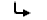

Always snap to grid
File:Redirectltr.png
From Unreal Wiki, The Unreal Engine Documentation Site

{kind=link}
No higher resolution available.
Redirectltr.png (47 × 20 pixels, file size: 1 KB, MIME type: image/png)
Summary[edit]
{kind=link}
Redirect Image used in Wikipedia.
Licensing[edit]
{kind=link}
| Permission is granted to copy, distribute and/or modify this document under the terms of the GNU Free Documentation License, Version 1.2 or any later version published by the Free Software Foundation; with no Invariant Sections, no Front-Cover Texts, and no Back-Cover Texts. A copy of the license can be found at GNU Free Documentation license. |
File history
Click on a date/time to view the file as it appeared at that time.
| Date/Time | Thumbnail | Dimensions | User | Comment | |
|---|---|---|---|---|---|
| current | 07:24, 5 May 2008 | 47 × 20 (1 KB) | Azrael (Talk | contribs) | Redirect Image used in Wikipedia. |
- You cannot overwrite this file.
File usage
The following 15 pages link to this file:
{kind=link}
{kind=link}
{kind=link}
{kind=link}
{kind=link}
{kind=link}
{kind=link}
{kind=link}
{kind=link}
{kind=link}